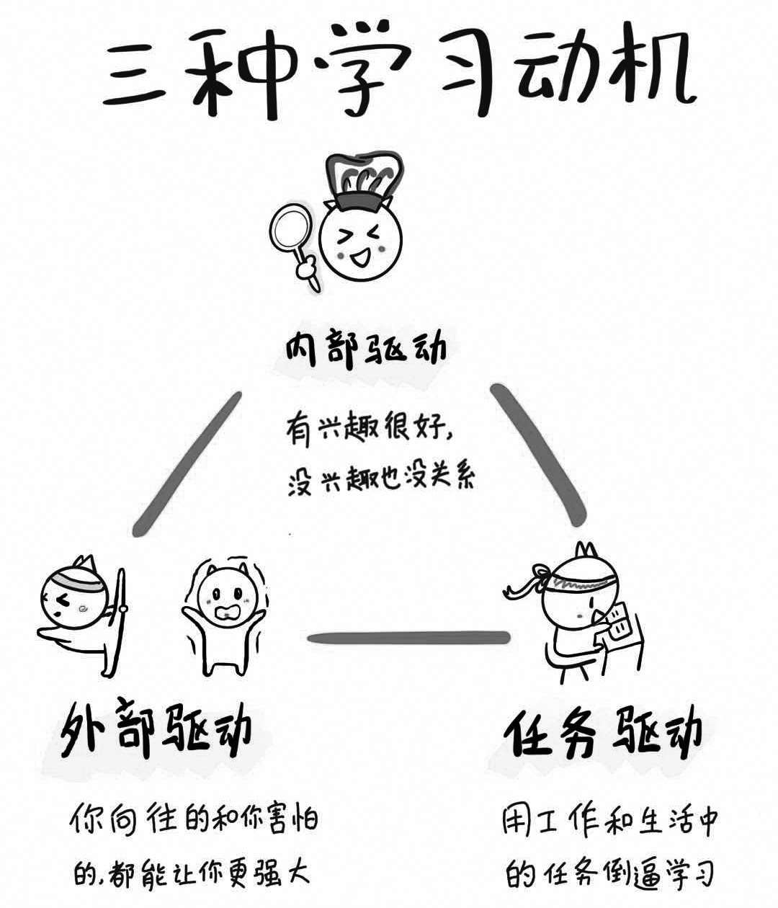

回忆一下，你上一次誓言旦旦要实现的学习目标，最近进展得如何？估计很多人的学习计划几乎在制订完的同时就被自己扔到了脑后——那本决心要背完的英语字典，书签永远插在A开头的前几页；自己省吃俭用买来的在线课程，每天都对打卡装作视而不见……
我们为何会对自己精挑细选的学习任务如此懈怠？归根结底，就是没有为自己找到一个好的学习动机。不管是内部驱动、外部驱动，还是看起来高大上的任务驱动，只有找到内在准确的动机，我们才能将学习这个艰苦的项目坚持到底。
为了找到对自己有效的学习动机，我们需要首先了解学习动机的概念。所谓学习动机，是指引发与维持我们的学习行为，并使之指向一定学业目标的一种动力倾向。那么，什么样的动力才能让我们持之以恒地坚持学习？最常见的就是以下三种学习动机：内部驱动、外部驱动和任务驱动。

在这三种学习动机之中，我们最熟悉的应该是内部驱动。内部驱动就是个体对所从事的活动本身有兴趣而产生的动机，比如我们平时说的兴趣、好奇心等等，这些都属于内部驱动。
内部驱动对孩子的激励效果非常明显。比如我家孩子从很小的时候就特别喜欢哈利·波特，利用这个兴趣，我给他买了很多哈利·波特的英文绘本。孩子看到这些绘本之后两眼放光，根本不用大人催促就会主动拿起书阅读，遇到不明白读不懂的地方就会追着我问，弄明白了之后还兴致勃勃，到处给别人讲哈利·波特的故事。通过这种方式，刚上幼儿园的孩子不知不觉中就学会了很多英文单词。
当然，如果成人有自己的爱好，也能驱动自己的学习。我有个朋友特别喜欢研究车，他不仅买了十几年的汽车杂志，还成天泡在汽车论坛里钻研。后来，这个朋友和几个志同道合的小伙伴一起进入汽车行业创业，生意做得有声有色。他们都是因为兴趣、好奇心这些内部动机，很自然地开始学习。
但是，对于大部分成年人来说，内部动机虽然有效，却机缘难得。成年人不像小孩子，对于兴趣、好奇心这些东西，他们有就是有，没有就是没有，很难通过培养让自己喜欢原来不感兴趣的东西。那么，如果我们想要学习的东西，自己确实不感兴趣，又该怎么办呢？这就需要接下来的两种动机上场：外部驱动和任务驱动。
我很喜欢《外面的世界》这首歌，尤其是里面的两句歌词：“外面的世界很精彩，外面的世界很无奈。”短短两句话，道尽了成年人的纠结心态：我们每个人都向往诗与远方，希望挣到更多钱，获得更多成功，但真正到了放手一搏的时候，我们又心怀恐惧，犹豫不前，害怕失去自己已经拥有的东西。
一边心向往之，一边恐惧不前——这就是每个成年人的真实写照。虽然身处其中很煎熬，可这却未必都是坏事。很多成年人在脱离学校教育后还能够拼命学习的动力，也正是这两点：他向往的和他害怕的。我身边有很多朋友就是这样，他们去健身，是因为向往自己能身材挺拔地站在健身房里被众人青睐；他们努力学雅思、考托福，是因为想考到国外大学接受更专业的教育。我自己也是如此，当初学英语时每天逼着自己背单词，就是因为我特别羡慕那些能够用英语和别人交流的人。因为有这份向往，每次坚持不下去时我就想象：有一天我也能够特别自信地用英语跟别人交流、去海外和用户谈项目、去国外留学深造……一脑补这些场景，我背单词的动力就来了。
成年人对美好未来的向往，和孩子对一颗糖、一个表扬的向往，本质上其实是一样的。只是长大之后，单纯的物质奖励对我们的影响会逐渐变小，但一个令人向往的愿景，对我们的影响却会不断变大。
我在知乎上看到过一个很火爆的话题，讨论究竟什么才是促使我们拼命学习的动力。其中有一个人的答案让我特别有感触，他说：“我背单词时，阿拉斯加的鳕鱼正跃出水面；我考证书时，太平洋彼岸的海鸥振翅掠过城市上空；我埋头钻研时，北极圈上的夜空闪耀着五彩斑斓的极光。当我踏踏实实地努力时，我觉得自己终生都不会看到的美丽景色，正在一步步向我走来。”
所以，只要我们有梦想，学习的欲望和信念感一点儿也不会比儿时少。当我们没有学习动力的时候，不妨去想想自己向往的生活是什么。你想不想去看看外面精彩的世界，去做自己喜欢做的事，买自己喜欢的东西，和自己喜欢的人在一起？找到你心里的这个念想，然后为了实现它，开始学习，提升自己——这就是动力。
向往能给成年人带来学习动机，那么无奈和害怕会不会起到相反的作用呢？让我们看一个真实的案例：
新东方创始人俞敏洪在创业之初，曾经被绑架过一次。那时候，国内的移动支付还不发达，大部分人都是用现金交易。新东方的学费也是如此，特别是在报名的高峰期周末，俞敏洪经常会收到大量现金。更糟糕的是，银行的对公业务周末是不办公的，一到周末，俞敏洪只好把这些现金拎回家，时间长了就被劫匪盯上了。一次，俞敏洪又独自一人带着大量现金回家，劫匪瞅准机会给他注射了一针大象用的麻醉剂，然后在他晕过去之后把钱都抢走了。万幸的是，俞敏洪的抗麻醉能力比较强，后来被医生抢救了过来。俞敏洪醒来的第一件事，居然是让别人考他单词。确定单词都记得之后，俞敏洪才放心下来，因为他发现自己赖以谋生的知识技能并没有失去。
这个故事让我深受触动，在如此重大的变故面前，居然只有知识才能给俞敏洪带来真正的安全感。这种感觉我也深有体会，很多时候在内心深处驱使我不停学习的动力，并不是奖励或者梦想，而是对未来的恐惧。我害怕自己如果不学习，个人竞争力就会越来越低。所以，只要运用得当，压力、恐惧和危机意识同样能为我们带来学习动机。
不过，并不是所有人都会有危机意识，也有一些人对压力不敏感，即使危机已经迫在眉睫，他们的心里也不会有所警觉。这种性格的人，在学习上就很难被外部动机驱动。比如现在的很多孩子，他们从小就生活在“蜜罐”里，衣来伸手，饭来张口，根本没有通过努力学习来改变自己状况的动力，因此也不会有危机意识。所以，在推动孩子学习的时候，家长就可以从这个角度出发，适当地制造一些危机，让孩子慢慢培养起危机意识。
关于危机意识，知名主持人蔡康永说过这样一段话：“15岁你觉得游泳难，放弃游泳，到18岁遇到一个你喜欢的人约你去游泳，你只好说‘我不会’；18岁你觉得学英语难，放弃英语，到28岁出现一个很棒但要会英语的工作，你只好说‘我不会’。人生的前期越嫌麻烦，越懒得学，后来就越可能错过让你动心的人和事，错过新风景。”蔡康永这段话，其实就是在启发每一个人，“少壮不努力、老大徒伤悲”，我们现在的每一次偷懒，都是在放弃以后过得更好的机会。这就是制造危机。
所以，即使没有“兴趣”和“好奇心”这类内部驱动，只要有“向往”和“畏惧”这两种外部驱动，我们依然能够动力十足地开始学习。而且，对很多人来说，这类外部驱动带来的学习效果非常明显。
除了内部驱动和外部驱动之外，还有一种效果明显的驱动力就是用工作和生活中的任务倒逼自己学习。一个人当然可能会为了实现自己的梦想或者解决危机去学习，但并不是所有的学习动机都是因为这两点，更常见的原因是为了完成工作和生活中的任务，为了解决当下面临的问题而努力学习。
一个最典型的例子就是在大学课堂上，那些打算毕业后从事和本专业无关工作的学生，往往会在专业课上睡觉或者玩手机；但那些将来打算从事与本专业相关工作的学生，就会认真听讲，追着老师讨论问题，因为他们知道，现在老师讲的知识，将来对他的职业生涯会有帮助。带着这种任务意识去学习，他们的学习动力自然就更强。
我们每个人当下的生活和正在从事的职业，其实都为我们提供了很多学习任务。在第一章“学习辨识力”中讲述金字塔模型时，我曾提到过我之所以去学时间管理、谈判技巧，都是因为当时的工作需要我具备这些能力，所以我只好倒逼自己去学习相关知识。
用任务倒逼学习，很多时候比兴趣带来的学习效果还要好。我有一个朋友对美术设计很感兴趣，于是报了好几个辅导班去学设计。但是学了一年之后，他发现自己的水平还没有公司新招的一个实习生好。为什么呢？因为实习生制作的每一张设计图都是有任务要求的，必须达到领导要求的标准才行。工作上的高标准、高要求为他带来的学习驱动比兴趣大多了，所以他必须不断练习，不断提高。
用任务倒逼自己学习，甚至还能帮你发现自己的兴趣所在。比如，我夫人对烹饪的兴趣，就完全始于给孩子做饭的任务。在没有小孩之前，我们吃饭比较随意，对饭菜的营养搭配也没太高要求，自然也就没有做饭这个任务。但是随着孩子的出生，夫人特别希望每天给孩子提供既有营养又美味的食物，做饭一下子成为了我们生活中一项重要任务。在这种任务的驱动之下，她做饭非常有动力，还经常潜心研究各种食谱，烹饪技能迅速得到了提高。后来，不仅孩子和家人看到她做的饭菜就胃口大开，很多朋友也开始欣赏她做饭的手艺，夫人对烹饪这件事的兴趣自然也跟着水涨船高，每天会兴致勃勃地开发一些新的菜式，乐在其中。
很多人可能觉得：“生活和工作中确实有很多任务，但是我每天都是疲于应付，也没能从中学到什么东西啊！”造成这种情况的关键，就在于你可能缺少了一种自觉的心态——要想从任务出发，倒逼自己学习，就必须在自己，不知道学什么，也没有动力学习的时候，时刻提醒自己要有一种发现任务、解决任务的意识。想一想打开搜索引擎的时候，你会往那个搜索框里输入什么问题，而这个问题就是你需要解决的任务。比如上面提到的我夫人需要解决的问题是：“怎么让孩子吃得健康又营养？”她带着这个问题发现了自己的任务，从而倒逼自己产生了学习烹饪的动力。
我那位喜欢美术设计的朋友，在受到公司实习生比他的水平还高的刺激之后，也可能会打开百度搜索框，输入“为什么设计水平进步很慢”这类问题。当我们没有动力去学习的时候，就可以想想自己曾经提过的问题，每一个问题里都有一个需要解决的任务。这种自觉寻找问题的意识，能够有效地帮助我们倒逼出自己的学习动力。
可能有人会说：“我是一个全职的家庭主妇，既没有工作上的任务，对生活中的柴米油盐也不感兴趣，我真的找不到自己的任务，应该怎么倒逼自己学习呢？”在这种情况下，还有一种方法是，你可以看看自己的孩子在学什么，然后把孩子的任务当成自己的任务，学好之后再去辅导孩子。
我的孩子最近在学习钢琴。因为年龄太小，他对音乐的理解力有限，老师要求孩子在家练琴时，家长最好能陪同并且辅导。但是我和夫人对钢琴一窍不通，根本没有办法辅导孩子。为了帮助儿子学琴，夫人也报了钢琴培训班——儿子上钢琴课的时候，她也在上课。这样她既合理利用了等待过程中的时间，也可以在学习之后更有效地陪孩子练习。现在，大部分情况下她都能顺利地辅导孩子了，而且，因为大人的学习能力更强，没过多久她就能演奏不少优美曲子，还经常在家庭活动中表演，她逐渐发自内心爱上了钢琴，自我学习的动力也越来越强。我夫人一开始学钢琴的目的非常明确，就是为了学会之后指导孩子练习。这种教学任务产生的驱动力让她的学习效果特别好，进步比很多人都要快。
所以，抱着一种“自己学完了要去教别人”的心态去学习，以教促学，也是落实任务驱动学习的一种方式。
详见俞敏洪《我曾走在崩溃的边缘——俞敏洪亲述新东方创业发展之路》，中信出版集团2019年版。